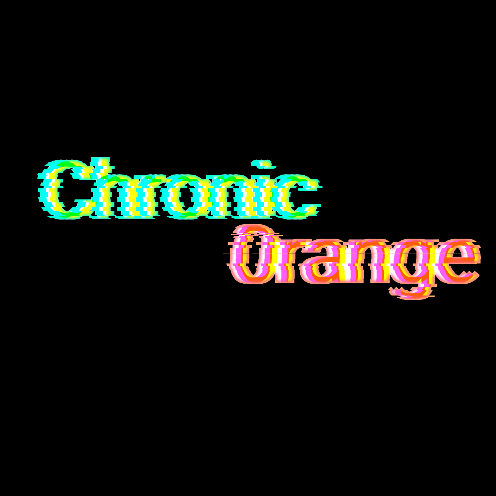

Chronic0range
Chronic0range
Chronic0range is a new testbench repo designed to learn the inner workings of IOS.
Add to Cydia
Featured Packages
CitrusSB
Tweak that allows the modification of the carrier text.
More info